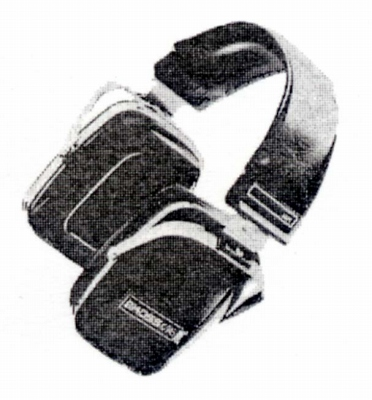
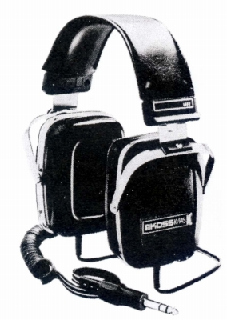
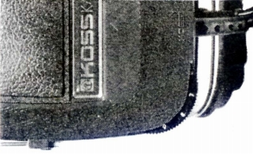

K/145


■価格 16,000円■型式 ダイナミック型■振動板 38�oポリエステル■インピーダンス 90Ω■再生周波数帯域 20-20,000Hz■許容入力 ■感度 100ｄB-SPL/0.25Ｖ正弦波■コード 3mカール■重量 454g（コード含まず）■発売 1977年頃■販売終了 1979年頃■備考 ボリュウム、バランスコントロール付イヤパッドはニューマライト。

コスのインデックスへ